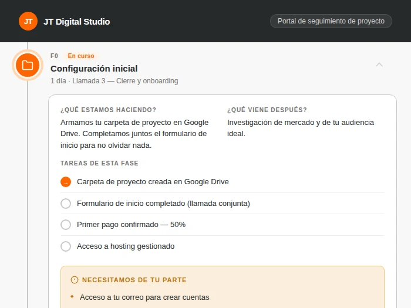
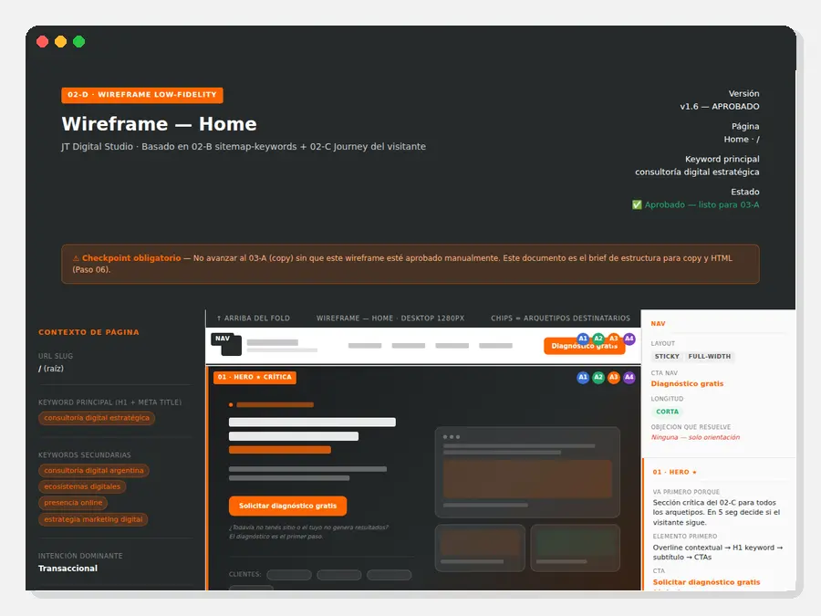
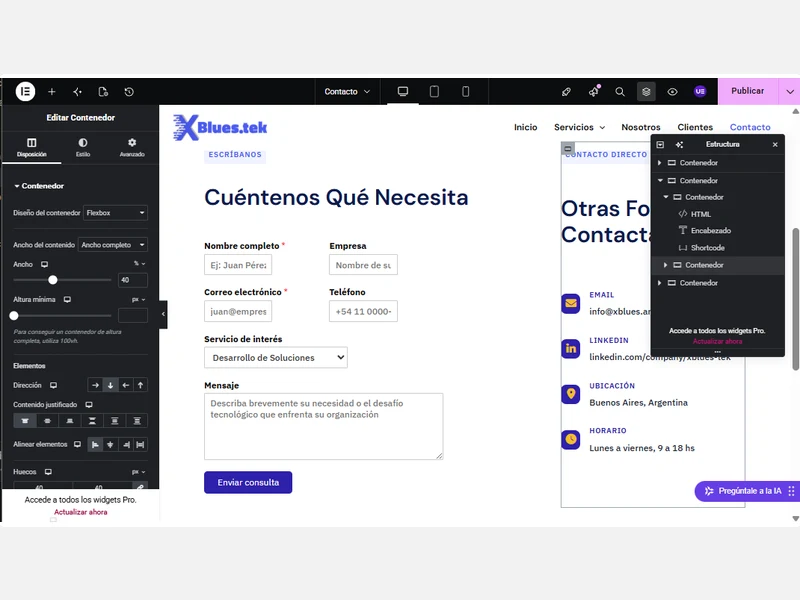
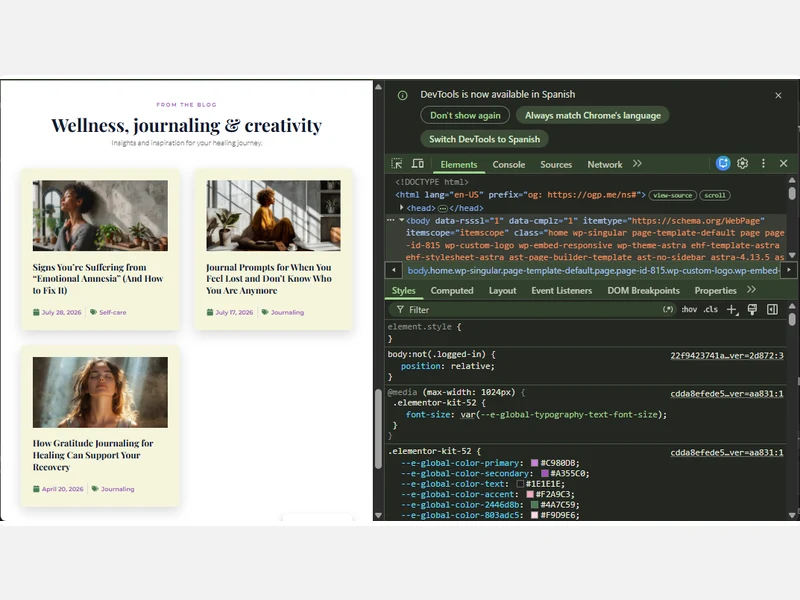

De la experiencia empresarial a la construcción de soluciones digitales
Soy Jazmin Tiburcio, fundadora de JT Digital Studio.
Después de más de 20 años trabajando en entornos empresariales, inicié una transición profesional hacia la estrategia digital, el diseño web y la construcción de sistemas funcionales.
Durante ese proceso desarrollé proyectos integrales que combinaron identidad visual, contenidos, arquitectura web, experiencia de usuario e implementación técnica. Esta experiencia fue acompañada por formación en SEO, WordPress, gestión de proyectos web y herramientas No-Code, además de una certificación en Storytelling en el Marketing Digital.
Hoy aplico esa combinación de criterio empresarial, planificación y ejecución digital en proyectos para profesionales y PyMEs de distintos sectores.
Cinco etapas para trabajar con claridad y reducir la incertidumbre
Cada proyecto sigue una metodología clara que permite comprender el negocio, definir una dirección y controlar la calidad antes de publicar.
01
Diagnóstico
Comprender antes de proponer. Analizo el negocio, su presencia digital, sus objetivos y los principales problemas que necesita resolver.
02
Estrategia
Ordenar antes de diseñar. Defino la arquitectura, los contenidos, los recorridos del usuario y las prioridades que guiarán el proyecto.
03
Construcción
Convertir la estrategia en una solución funcional. Diseño e implemento el sitio cuidando la identidad visual, la navegación, la experiencia móvil y las integraciones necesarias.
04
Control de Calidad
Revisar antes de publicar. Compruebo enlaces, formularios, contenidos, visualización en distintos dispositivos, velocidad, seguridad y funcionamiento general.
05
Evolución
Acompañar después del lanzamiento. El sitio puede continuar creciendo mediante soporte, mantenimiento y mejoras adaptadas a las nuevas necesidades del negocio.
Cómo trabajo con usted
Tres reglas que protegen su proyecto
El dominio y el hosting siempre están a su nombre
Su sitio web es un activo de su negocio.
Por eso, el dominio y el hosting se contratan siempre bajo su titularidad. Usted conserva el control de sus cuentas, archivos y accesos, mientras JT Digital Studio se encarga de las configuraciones técnicas necesarias.
Usted mantiene el control, con acompañamiento cuando lo necesita
Recibe los accesos y la orientación necesaria para administrar los contenidos básicos de su sitio.
Si prefiere delegar la parte técnica, puede continuar con un Plan Care para mantener la web segura, actualizada y en funcionamiento.
Comunicación clara, sin tecnicismos innecesarios
Cada decisión se explica en términos de negocio: qué se está haciendo, por qué es necesario y cómo contribuye al objetivo del proyecto.
No necesita comprender de código para mantener el control de su sitio.
Detrás de escena
Así se construye cada proyecto
Detrás de cada sitio hay análisis, planificación, diseño, implementación y revisión. Este es el espacio donde las ideas se convierten en estructuras claras y las estructuras en soluciones digitales funcionales.
01
Análisis y diagnóstico

Comprender antes de proponer.
02
Arquitectura y contenidos

Ordenar antes de diseñar.
03
Diseño e implementación

Construir con intención.
04
Control de calidad

Revisar antes de publicar.
¿Está listo para transformar su presencia digital en un activo para su negocio?
Cuénteme en qué punto se encuentra su negocio y qué necesita resolver.